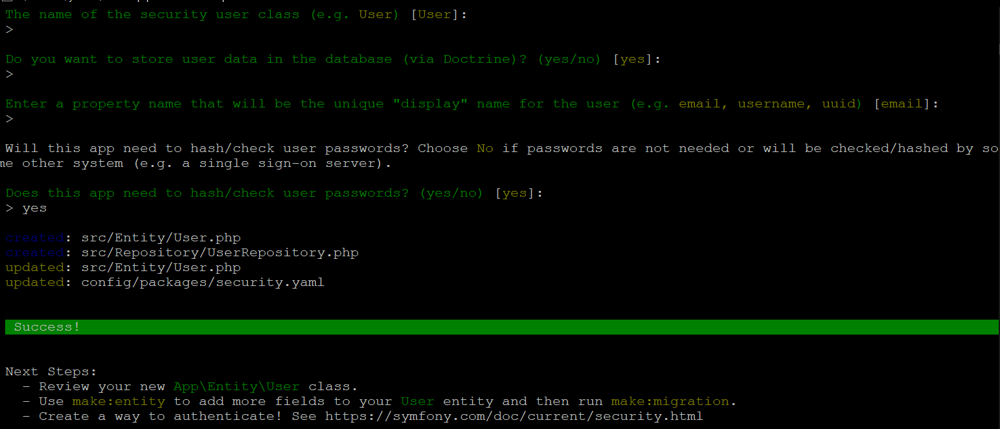
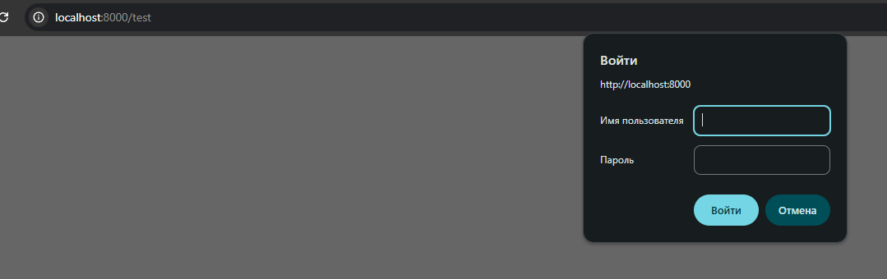
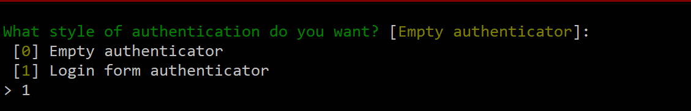
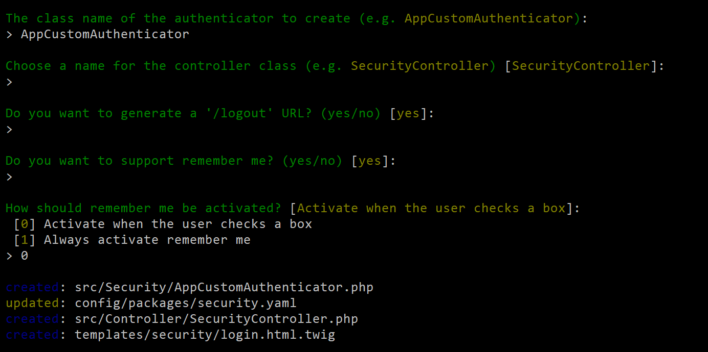
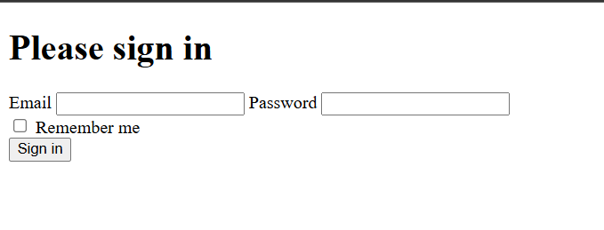

Процесс

Создание тестовой страницы
namespace App\Controller;
use Symfony\Bundle\FrameworkBundle\Controller\AbstractController;
use Symfony\Component\HttpFoundation\Response;
use Symfony\Component\Routing\Attribute\Route;
final class TestController extends AbstractController
{
#[Route('/test', name: 'app_test')]
public function index(): Response
{
return $this->render('base.html.twig', [
'controller_name' => 'TestController',
]);
}
}
Создаем нашего пользователя
php bin/console make:user
Что вводим
Наш пользователь
namespace App\Entity;
use App\Repository\UserRepository;
use Doctrine\ORM\Mapping as ORM;
use Symfony\Component\Security\Core\User\PasswordAuthenticatedUserInterface;
use Symfony\Component\Security\Core\User\UserInterface;
#[ORM\Entity(repositoryClass: UserRepository::class)]
#[ORM\Table(name: '`user`')]
#[ORM\UniqueConstraint(name: 'UNIQ_IDENTIFIER_EMAIL', fields: ['email'])]
class User implements UserInterface, PasswordAuthenticatedUserInterface
{
#[ORM\Id]
#[ORM\GeneratedValue]
#[ORM\Column]
private ?int $id = null;
#[ORM\Column(length: 180)]
private ?string $email = null;
#[ORM\Column]
private array $roles = [];
/**
* @var string The hashed password
*/
#[ORM\Column]
private ?string $password = null;
public function getId(): ?int
{
return $this->id;
}
public function getEmail(): ?string
{
return $this->email;
}
public function setEmail(string $email): static
{
$this->email = $email;
return $this;
}
/**
* A visual identifier that represents this user.
*
* @see UserInterface
*/
public function getUserIdentifier(): string
{
return (string) $this->email;
}
/**
* @see UserInterface
*/
public function getRoles(): array
{
$roles = $this->roles;
// guarantee every user at least has ROLE_USER
$roles[] = 'ROLE_USER';
return array_unique($roles);
}
public function setRoles(array $roles): static
{
$this->roles = $roles;
return $this;
}
/**
* @see PasswordAuthenticatedUserInterface
*/
public function getPassword(): ?string
{
return $this->password;
}
public function setPassword(string $password): static
{
$this->password = $password;
return $this;
}
#[\Deprecated]
public function eraseCredentials(): void
{
// @deprecated, to be removed when upgrading to Symfony 8
}
}
Далее миграции
php bin/console make:migration
php bin/console doctrine:migrations:migrate
Файл security
security:
providers:
app_user_provider:
entity:
class: App\Entity\User
property: email
firewalls:
main:
pattern: ^/
provider: app_user_provider
http_basic: ~
access_control:
# запретить доступ всем, кроме аутентифицированных
- { path: ^/, roles: ROLE_USER }
Пример с memory пользователем
security:
providers:
in_memory:
memory:
users:
admin:
password: '$2y$13$KPu...hash...' # bcrypt
roles: ROLE_ADMIN
firewalls:
main:
http_basic: ~
provider: in_memory
access_control:
- { path: ^/, roles: ROLE_ADMIN }
Генерация хэша
php bin/console security:hash-password
Получение пользователя в коде и в twig
$this->getUser();
{{ app.user.email }}
Результат
Теперь будем делать через form-у
Команда для создания формы
php bin/console make:security
Прцесс команды
Процесс команды
Созданный контроллер
namespace App\Controller;
use Symfony\Bundle\FrameworkBundle\Controller\AbstractController;
use Symfony\Component\HttpFoundation\Response;
use Symfony\Component\Routing\Attribute\Route;
use Symfony\Component\Security\Http\Authentication\AuthenticationUtils;
class SecurityController extends AbstractController
{
#[Route(path: '/login', name: 'app_login')]
public function login(AuthenticationUtils $authenticationUtils): Response
{
// if ($this->getUser()) {
// return $this->redirectToRoute('target_path');
// }
// get the login error if there is one
$error = $authenticationUtils->getLastAuthenticationError();
// last username entered by the user
$lastUsername = $authenticationUtils->getLastUsername();
return $this->render('security/login.html.twig', ['last_username' => $lastUsername, 'error' => $error]);
}
#[Route(path: '/logout', name: 'app_logout')]
public function logout(): void
{
throw new \LogicException('This method can be blank - it will be intercepted by the logout key on your firewall.');
}
}
Форма
Authenticator
namespace App\Security;
use Symfony\Component\HttpFoundation\RedirectResponse;
use Symfony\Component\HttpFoundation\Request;
use Symfony\Component\HttpFoundation\Response;
use Symfony\Component\Routing\Generator\UrlGeneratorInterface;
use Symfony\Component\Security\Core\Authentication\Token\TokenInterface;
use Symfony\Component\Security\Http\Authenticator\AbstractLoginFormAuthenticator;
use Symfony\Component\Security\Http\Authenticator\Passport\Badge\CsrfTokenBadge;
use Symfony\Component\Security\Http\Authenticator\Passport\Badge\RememberMeBadge;
use Symfony\Component\Security\Http\Authenticator\Passport\Badge\UserBadge;
use Symfony\Component\Security\Http\Authenticator\Passport\Credentials\PasswordCredentials;
use Symfony\Component\Security\Http\Authenticator\Passport\Passport;
use Symfony\Component\Security\Http\SecurityRequestAttributes;
use Symfony\Component\Security\Http\Util\TargetPathTrait;
class AppCustomAuthenticator extends AbstractLoginFormAuthenticator
{
use TargetPathTrait;
public const LOGIN_ROUTE = 'app_login';
public function __construct(private UrlGeneratorInterface $urlGenerator)
{
}
public function authenticate(Request $request): Passport
{
$email = $request->getPayload()->getString('email');
$request->getSession()->set(SecurityRequestAttributes::LAST_USERNAME, $email);
return new Passport(
new UserBadge($email),
new PasswordCredentials($request->getPayload()->getString('password')),
[
new CsrfTokenBadge('authenticate', $request->getPayload()->getString('_csrf_token')),
new RememberMeBadge(),
]
);
}
public function onAuthenticationSuccess(Request $request, TokenInterface $token, string $firewallName): ?Response
{
if ($targetPath = $this->getTargetPath($request->getSession(), $firewallName)) {
return new RedirectResponse($targetPath);
}
// For example:
// return new RedirectResponse($this->urlGenerator->generate('some_route'));
throw new \Exception('TODO: provide a valid redirect inside '.__FILE__);
}
protected function getLoginUrl(Request $request): string
{
return $this->urlGenerator->generate(self::LOGIN_ROUTE);
}
}
Файл security
security:
# https://symfony.com/doc/current/security.html#registering-the-user-hashing-passwords
password_hashers:
Symfony\Component\Security\Core\User\PasswordAuthenticatedUserInterface: 'auto'
# https://symfony.com/doc/current/security.html#loading-the-user-the-user-provider
providers:
# used to reload user from session & other features (e.g. switch_user)
app_user_provider:
entity:
class: App\Entity\User
property: email
firewalls:
dev:
pattern: ^/(_(profiler|wdt)|css|images|js)/
security: false
main:
lazy: true
provider: app_user_provider
custom_authenticator: App\Security\AppCustomAuthenticator
logout:
path: app_logout
# where to redirect after logout
# target: app_any_route
remember_me:
secret: '%kernel.secret%'
lifetime: 604800
path: /
# by default, the feature is enabled by checking a checkbox in the
# login form, uncomment the following line to always enable it.
#always_remember_me: true
# activate different ways to authenticate
# https://symfony.com/doc/current/security.html#the-firewall
# https://symfony.com/doc/current/security/impersonating_user.html
# switch_user: true
access_control:
- { path: ^/login, roles: PUBLIC_ACCESS }
- { path: ^/, roles: ROLE_USER }
when@test:
security:
password_hashers:
Symfony\Component\Security\Core\User\PasswordAuthenticatedUserInterface:
algorithm: auto
cost: 4 # Lowest possible value for bcrypt
time_cost: 3 # Lowest possible value for argon
memory_cost: 10 # Lowest possible value for argon
Результат
Резимирую
Symfony Security состоит из нескольких ключевых частей:
- Firewall — решает, должен ли запрос быть защищён и какой механизм аутентификации применять.
- Authenticator — объект, который пытается "узнать" пользователя (по логину/паролю, JWT, cookie и т.д.).
- User Provider — загружает пользователя из БД.
- Token Storage — хранит текущего аутентифицированного пользователя.
- Access Decision Manager — решает, можно или нельзя.
public function register(Request $request, UserPasswordHasherInterface $passwordHasher): Response
{
$user = new User();
$plainPassword = $request->request->get('password');
// 1. Хэшируем пароль
$hashedPassword = $passwordHasher->hashPassword(
$user,
$plainPassword
);
// 2. Сохраняем хэш в сущность
$user->setPassword($hashedPassword);
}